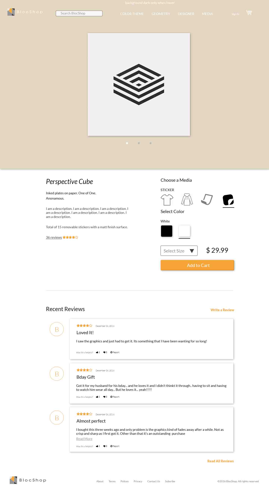

Description
Having gone through a five year architecture program, I have seen many design projects in the academic world. A lot of the projects that students create while in school are absolutley amazing, but they usually end up in a art folder or deep down in a hard drive that is never to see daylight again. Considering the fact that most design students struggle financially, yet still need to spend more money for materials, BlocShop aims to help and promote works done by designers in school or freelance designers in the profession. It is a platform for designers to updload their graphics and to be sold off as clothes or prints to people who recognize their work and would like to collect them.
Logo
I personally like to do initial branding and low fidelaties by hand on paper. I feel that is the fastest way to come up with illustrations and it helps me with creativity. I don't like to get things too complicated, so I stuck with the given name of BlocShop. The more important thing for me is to create a story and a brand around an exisiting name. The word bloc took me directly to the idea of shopping blocs. Considering that I am aiming for a graphics, prints and t-shirt site, I tried to combine the bloc aspect and the essence of a t-shirt.
Branding
The overall design is aimed at being sleek and minimal with the use of ultra thin fonts with white transparent buttons. A warm and light orange chosen for the theme to exaggerate the natural bage color of high quality print making paper and to provide a contrast with the unsaturated overall theme.

Research
One of the most important thing for a new coming ecomerce website is the ability to attract and retain customers. The user experience of these websites are crucial to maintain a good population of returning customers. Thus I conducted a survey in an attempt to understand and find out what are the most important aspects of a site's performance to a user. The results indicates that the ease of navigation is of the most important thing that a user wants followed by the ease of transaction.
Fidelity Design
As mentioned earlier, I typically like to layout the low fidelaty by hand on paper. I also like to turn my high fidelaties into first iterations of designs with colors and images and colors to get a sense morethan just the black and white.

The browsing page went through a few design mockups as I contemplated the importance of concept and the ease of navigation of the website.


So did the review section of the page. I started out with a traditional card listing, but felt that there can be much more to reviews to provide the users of a feature that is beyond the traditional to use. The second iteration of carasoul went the opposite direction which was quickly eliminated. The third version of comparison is a good idea, but ultimatley not suited for this specific website. Finally I came up with a design that allows users to identify the number of ratings not by an average or a number but by visual bubles. This not only present a new challenging way to present total reviews, but is also inline with the overall scheme of the website.



Finally, the cart and the payment pages are all combined into one for minimal pages one would need to make a puchase.


Code
The site uses HTML5, CSS3 and jQuery. Much of the time of this case study was spent on the coding of the detail page specifically the ratings. The design purpposes a new representation of a traditional bar of rating by turning the ratings into bubbles. As the number of reviews grow, so do the bubbles when they are hovered over. And believe it or not, creating your own fill up bar for rating was a little challenging when you have just learned jquery.